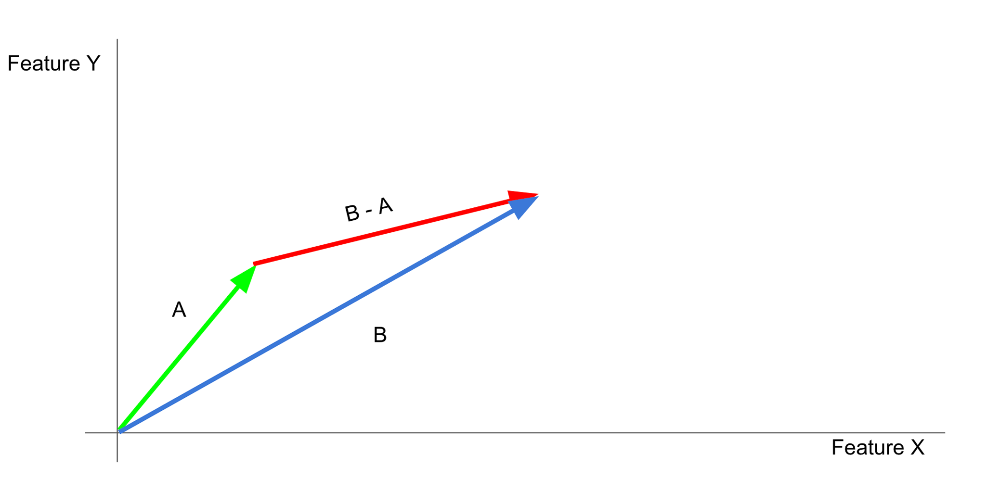

Introduction to Search by Analogy (with Videogames)
Imagine what fills in the blank:

The primary difference between the top two moments was that Mario was on foot (left) or riding Yoshi (right). The difference between the two moments on the left was that Mario was outdoors with a goomba (top), or indoors with Bowser (bottom). You were probably able to solve the analogy above, by imagining something like this to fill in the blank:

In this analogical solution, Mario is the indoors with Bowser (as on the bottom), and riding Yoshi instead of on foot (as on the right). If you’re a Mario fan you probably also noticed that these images aren’t from a real Mario game, but I bet that did not make it any harder to solve the analogy.
This kind of analogical reasoning is easy for humans to do, but hard for them to explain, and it is not obvious that a machine can do it at all. Below, we show how a computer can be trained to understand this analogy, and provide an interactive example.
Parameterizing Videogame Moments
To a human being, each moment in a game has many features, but those features can also be broken down into numbers. In a Mario game this could include things like the number of coins collected, the number of enemies on the screen, the number of lives remaining, score, and so on:

These are all the sort of things that we might pick out as features for a Mario game, but from now on let’s treat each of these as something a little more abstract (Feature X, Feature Y, etc.). The rest of this explanation works even if we have no idea what any of the individual features mean (e.g., if they are for an unfamiliar game, or if they were generated by machine learning). If we look at a graph of gameplay over time, we can see how each moment is a combination of these features:

We can assign a numeric value to each feature and create a vector (list) of numbers to represent any specific videogame moment. Now each individual moment is just a long list of numbers:

Credit to Adrian Colyer for inspiring this illustration.
So, why did we bother turning each moment in the game into a list of numbers? In short, because now we can do interesting things to these moments (with math), and what we can accomplish that way might surprise you.
In reality our vectors will have many dimensions, but it will be easier to illustrate the rest of this explanation if we pretend that they only have two. In that case, our videogame moment vectors might look something like this.

We can imagine a graph of Feature X (on the x-axis) and Feature Y (on the y-axis). If the game had only these two features, every possible moment would exist somewhere on this 2D graph. In this case we put Moment A and Moment B on the graph, from the example above.
So, here’s the first part of how the search-by-anlogy trick works:
We can take the difference between them to get a new vector (B-A) This vector removes what they have in common (Mario outdoors), but leaves intact what is distinct between them (on foot vs on Yoshi). The result of this operation (B-A) is a difference vector that we think represents something like the Yoshiness of that moment.
Here’s the second part of the search-by-analogy trick:
Now that we have a difference vector representing something like Yoshiness (B-A), we can add it to a moment that has no Yoshi in it (Moment C, from our example above), and hopefully find an equivalent moment with one crucial difference (the solution of to the analogy above, Moment C + Yoshi).

That is the essence of videogame moment search-by-analogy, but there is one final important wrinkle, which is the part that makes this search. Although we can imagine a graph that contains all possible moments in a game, for most games we are only ever going to be working with a small sample of those moments. What if the moment we are looking for doesn’t exist in that sample? What if the moment that we are looking for isn’t even possible?

In this case, we add the difference vector (B-A) to another (Moment C) to create a query vector. Just as we said above, this is like adding the distinction we defined (Yoshiness) to Moment C. The only difference is that we are not quite done yet. Now, we just need to find the moment in our sample that is closest to our query vector.

This is it, the closest moment to this query vector is our analogy search result, Moment D. The interactive below contains examples of a search-by-analogy success for a couple of games. All of the moments used came from a human playthrough of each game (Super Mario World and Super Metroid). The graph shows, for every moment in the sample, its similarity to the difference vector (B-A, on the x-axis), its similarity to Moment C (on the y-axis) and how close it is to the query vector (dot size and color). You can scroll around the graph and mouse over any moment for more detail. You can also make your own queries (changing Moments A, B, and C) and see what happens: